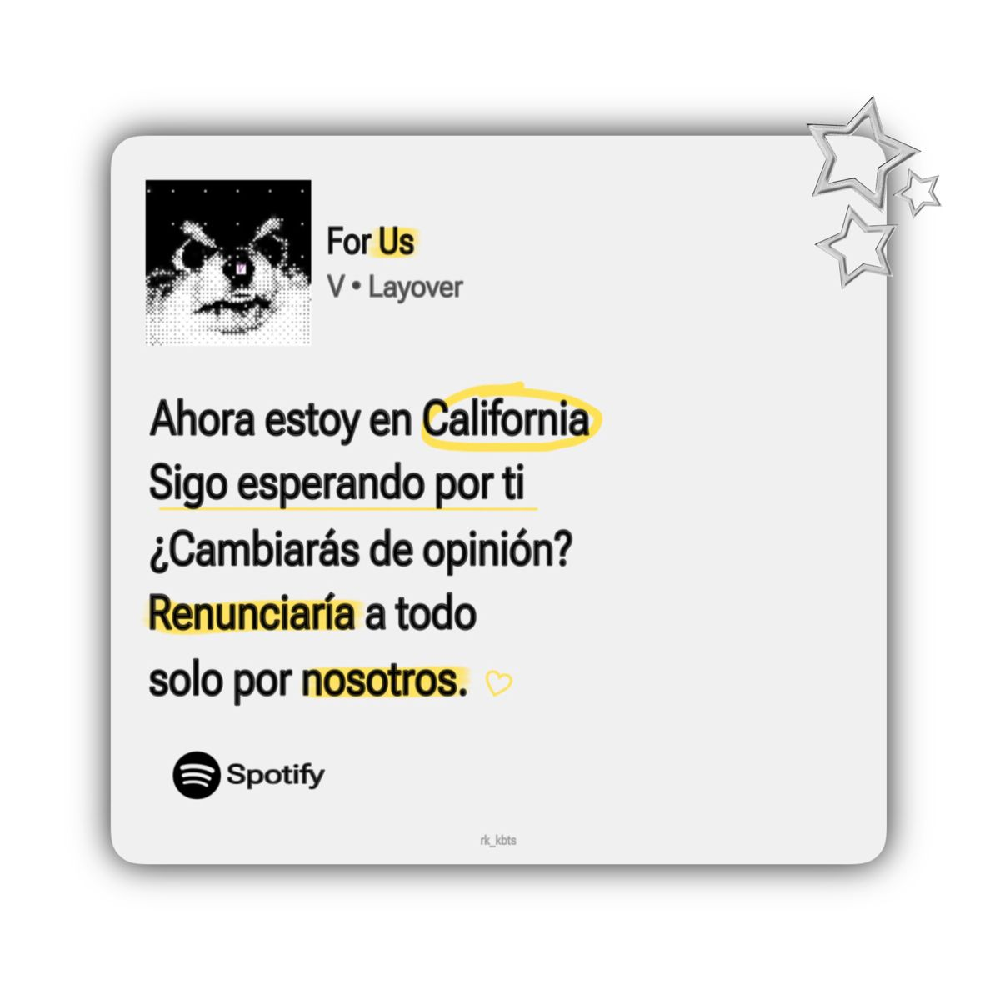
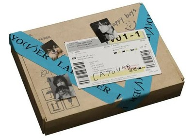

Kim Taehyung
Kim Taehyung

¿Quién es?
Kim Taehyung, cuyo nombre artístico es V, nació el 30 de diciembre de 1995 en Daegu. Es cantante y una de las voces más distintivas del grupo, gracias a su tono grave y único. También es conocido por su personalidad artística y su interés en la fotografía, la moda y el jazz.
Su unión a BTS
Acompañó a un amigo a una audición en Big Hit Entertainment, pero terminó siendo el único seleccionado. Su participación en el grupo se mantuvo en secreto hasta el debut, lo que generó sorpresa entre los fans.

Trabajo solista
Entre sus canciones destacan “Slow Dancing” y “Love Me Again”. Su estilo se inclina hacia el jazz, R&B y sonidos vintage, con una estética relajada y elegante.
¡Escucha su música!
Sumérgete en la atmósfera única de Layover, un viaje musical lleno de nostalgia y estilo.
Conoce su música